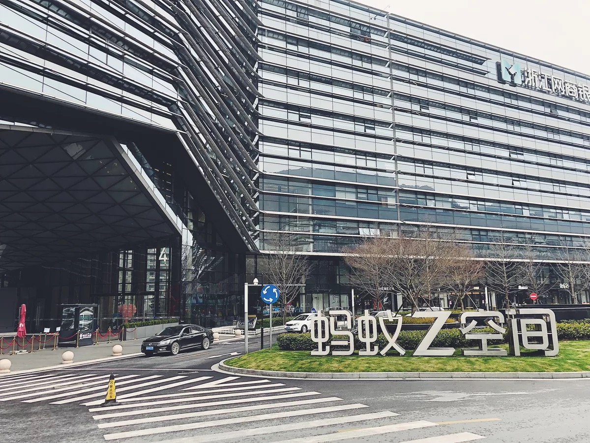

记：阿里 2019 第一届本地生活黑客松
同往年一样，2019 年的饿了么黑客松还是如期而至。与往年不同的是，自融合一年后，今年的参赛同学中又迎来了集团“口碑”的小伙伴们。决定和超哥（川青）等小伙伴组队，队名定为“代达罗斯之殇”，本着以“友谊第一，比赛第二”放低身段交流学习的愿景来参赛，但没想到杨哥（以宁）稍微发力便轻松进入了决赛，这下“决赛之后请客吃饭”的机会可不能放过了。自初赛结束又过了几日，川青、不滞、沐雨、以宁和曜彤的决赛之路在杭州 Z 空间开始了。
抵达日（3/8）
下午5点左右抵达了酒店，位置离 Z 空间大约5分钟的步行距离。和前两届的饿了么黑客松冠军江老师（有练）一起吃了个晚饭，讨论了一下往年黑客松的举办细节情况。自江老师去年从饿了么转到蚂蚁工作后，也过去了大半年的时间。作为人工智能工程化领域的专家，每一次和他交流都能够学到不少东西（膜）。
晚上8点左右在 Z 空间测试了网络环境，查看了组委会提前提供给我们的一些数据表资源，并抽签选择了各个队伍的“作战指挥室”，我们的工作位置临近“能量补给站”和本楼层的出口，对实时补充体力和遇灾及时逃生有着极大的帮助。本着提前熟悉比赛资源，节省时间的理念，小组成员立马一起对这些数据进行了分析，最后得到的结论是“没什么乱用”。与往年的 24h 黑客松相比，今年的比赛时长拉长到了 60h，因此我们是有足够多的时间去思考要做怎样一款产品的。试想一下这和 VC 路演/洽谈会在某些程度上是不是有一些相似？

这里不得不提的是，Z 空间的工作环境真的很棒，超级严格却十分方便的人脸识别安保、宽敞明亮甚至可以放下五张折叠床的会议室，以及时刻保持溢出状态的“粮食弹药库”。23点，睡觉 …zZ
比赛日（3/9 - 3/11）
第一日比赛实际上是从下午才正式开始的。上午睡个懒觉养足精神，下午同以往各类比赛的开场流程大致类似，先是宣传板拍照、签名，然后是活动开幕式。开幕式上每个队伍花了 3-5 分钟进行自我介绍，然后由建刚老师宣布比赛题目，CTO 雪峰给我们进行了“赛前鼓励”。记忆尤深的是来自口碑的团队“蓝眼”在自我介绍环节还给我们带来了一支舞蹈，现场一团和气（词没用错，气氛和配乐自己脑补）。开幕式环节后，比赛终点倒计时的秒表开始转动，气氛升级、“战斗”开始。
…
【由于后续内容涉及敏感信息，请登陆 ATA 阅读全文】
评论 | Comments